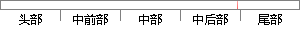

图4-26 delay()函数代码
片段位置图

相似结果
相似片段： 发布于:2012-11-26 11:48:49 谁帮小弟我看看下面delay函数中的有关问题,... js全局函数在编写非浏览器的js代码时,全局函数几乎是js的全部原生功能。 http...
| 标题 | 《js delay函数 - 我的异常网》 |
| 对比库 | PaperRater云论文库 |
| 网址 | http://www.myexception.cn/h/943244.html |
| 相似率 | 69.23% （轻度抄袭） |